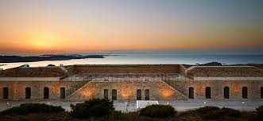

מוזיאון גריבלדי - שהייה של יום
מוזיאון גריבלדי (באיטלקית: Batteria Arbuticci - Memoriale Giusepe Garibaldi) הוא מוזיאון הנמצא בקפררה ובו מוצגים תמונות ויצירות אומנות של גריבלדי, בגדיו השונים וגם של צבאו, שיחזורים של שדות הקרב שלו ופסלים רבים שלו. כפי שכבר אמרנו האיטלקים והאנשים בקאפררה מרגישים שזו זכות להיות חלק מעמו וקהילתו של גריבלדי. הם בונים לו המון מוזיאונים ואנדרטאות ורק רוצים לשמר אותו ויש שיגידו גם "להשוויץ" בגריבלדי. ניתן להגיד שעל ידי כל האנדרטאות והמוזיאונים הרבים שהזכרנו כאן "משוויצים" האיטלקים בהיות גריבלדי אחד משלהם ועל כל הישיגיו הרבים. נוסף על זאת ניתן גם לפרש את הרצון של הקהילה בצפון איטליה לבנות כל כך הרבה מקומות שמזכירים את שהותו של גריבלדי עד מותו ביישובם הוא הרצון שלהם להראות שאף על פי שהיה מאחד הדרום והיה חלק גדול מאוד באיחודה של איטליה בכלל ושל הדרום בפרט הוא עדיין בחר לגור ולמות בצפון. כפי שאמר גוז'פה מציני: "ארץ מולדת אינה טריטוריה בלבד. שטחה המיוחד של הארץ אינו אלא הבסיס שלה. ארץ מולדת היא רעיון. רגש האהבה ותחושת הָרֵעוּת הם הַמְלַכְּדִים את כל בני אותה טריטוריה לאגודה אחת. " כפי שכתוב בדבריו, ארץ המולדת בשביל האיטלקים אינה רק הטריטוריה עצמה אלא היא הרעיון, רגש האהבה ותחושת הרעות, ניתן לראות מדברים אלא שמציני היה חלק מהתנועה הרומנטית ואפשר לשייך את זה גם לתושבי קאפררה אשר מרגש הערצה ואהבה לגריבלדי בנו לו את כל האנדרטאות ומוזיאונים הללו.
